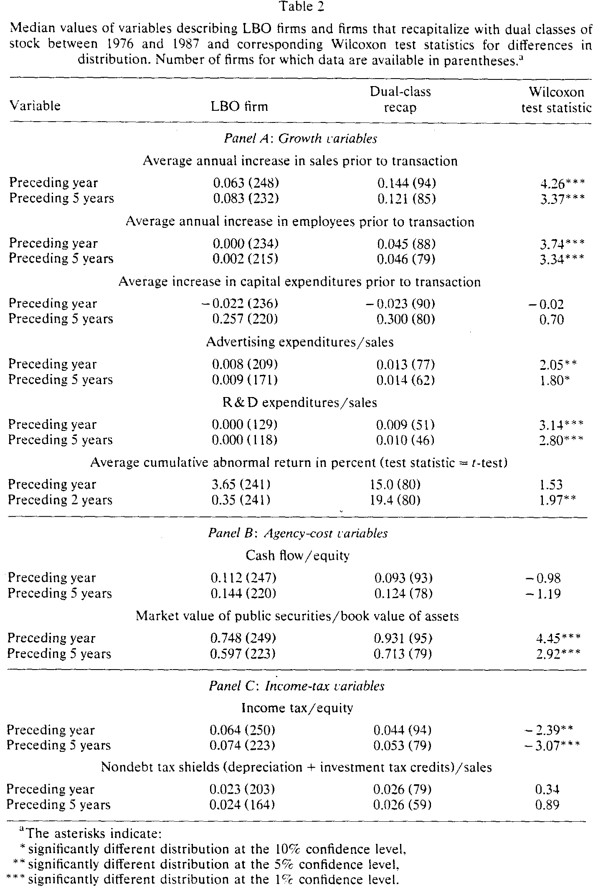
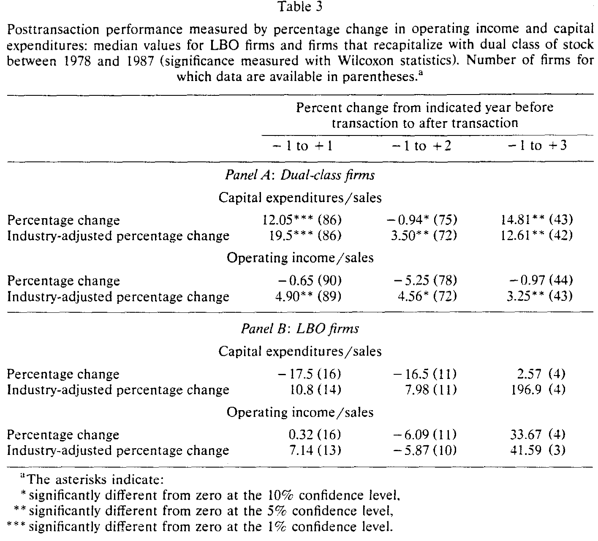
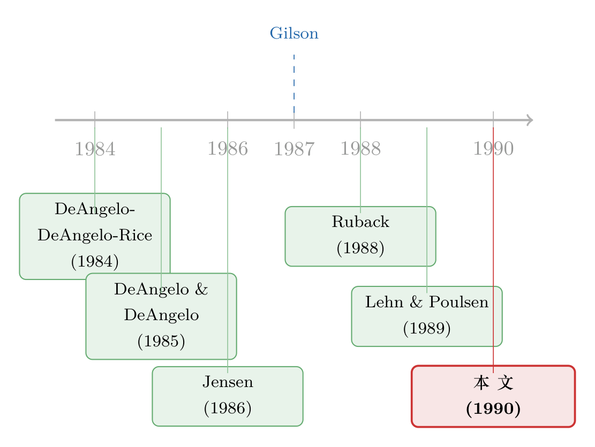

把投票权和钱包分开来谈：一家公司为什么选 recap 而不是 LBO
本文读的是 Lehn, Netter & Poulsen (1990, Journal of Financial Economics)：双层股权资本重组 (dual-class recapitalization) 和杠杆收购 (LBO) 都是把投票控制权集中到管理层手里的办法，但前者几乎不动「钱包」（残余索取权），后者却把投票权和现金流权一起买断。作者在 380 家公司里检验「为什么有的公司选 recap、有的选 LBO」，发现成长性才是那个真正说了算的变量。
1 一个被премиум撕开的口子
先说一个让人不太舒服的事实。
同样是把一家上市公司的控制权「收」到管理层手里，走杠杆收购 (leveraged buyout, LBO) 这条路，股东平均能拿到 35% 到 50% 的收购溢价 (premium)；可要是走双层股权重组 (dual-class recapitalization，下称 recap) 这条路，股东几乎一分溢价都拿不到——Partch (1987) 和 Jarrell & Poulsen (1988) 甚至发现，1985 年以后的 recap 还伴随着小幅的负股价反应。
同一个目的，两种价码。这就很扎眼了。
于是一个自然的诘问冒了出来，而且是 Gilson (1987) 喊得最响的那一版：既然 LBO 里的内部人愿意为控制权掏一大笔钱，那 recap 里的内部人凭什么可以白拿？Gilson 的答案带着浓重的道德色彩——这叫剥削 (exploitation)。recap 的内部人本来就握着大量股份、本来就能拍板，于是他们利用一个「囚徒困境」式的换股要约，把外部股东逼到墙角：你不换，手里的高投票权股票就成了一张废票；你换，控制权就拱手让给了内部人。横竖都是输，那不如换。Gilson 由此呼吁监管出手，直接堵死 recap 这条「剥削」的路。
这是个干净利落、也很有煽动力的故事。本文三位作者（其中 Lehn 当时就在 SEC 的首席经济学家办公室）要做的，恰恰是给这个故事松一松绑：会不会，溢价的有无根本不是「剥削」与否的证据，而仅仅是因为——这两类公司本来就是不一样的公司？
2 把两种交易拆到骨头里看
要回答这个问题，得先把 recap 和 LBO 的「同」与「异」摆清楚。
相同之处有两点：其一，两者都把投票控制权集中到了一小撮人（通常就是管理层）手里；其二，两者都常被当作反收购的盾牌。后一点尤其要替 LBO 正个名——人们习惯把 LBO 看成一种「收购」，但 Shleifer & Vishny (1988) 早就指出，管理层收购往往是经理人在敌意收购威胁下「自保」的手段。Lehn & Poulsen (1989) 的数据更直接：1981–1987 年的 283 桩 LBO 里，有 40% 在交易前出现过收购传闻或实际报价。所以 LBO 也是一种反收购装置，和 recap 是「同行」。
关键的差异，作者反复强调，只有一条——对「投票权」与「残余索取权」之间关系的改变。
- 在 recap 里，内部人增加投票权，却维持甚至降低自己对残余现金流的占有。DeAngelo & DeAngelo (1985)、Partch (1987) 都发现，recap 之后内部人手里高投票权股票的比例远高于低投票权股票，投票权相对于现金流索取权被显著放大。
- 在 LBO 里，内部人是成比例地同时买下投票权和残余索取权，而且通常用巨量债务来融资。Marais, Schipper & Smith (1989) 测得 LBO 后中位杠杆（长期债/(长期债+股东权益)）从
26%飙到85%；Lehn & Poulsen (1988) 测得平均债务/股本比从0.457涨到5.524。
这条差异会顺手解释一个旁证：recap 公司交易前的内部持股就已经很高。在本文样本里，recap 前内部人平均持有 43.1% 的普通股，而 LBO 公司只有 23.4%（中位数 46.2% 对 17.7%）。正因为本来就「说了算」，所以 97 家 recap 公司里，只有 3 家在交易前出现过收购传闻或报价——它们压根不太需要靠 recap 来防身。
到这里，故事的主线已经浮出来了。如果 recap 公司和 LBO 公司在「持股结构」上就天差地别，那它们在别的维度上凭什么会是同一种公司？作者把这个直觉拆成了四组可检验的假说。
3 四个假说，一条主线
本文不是一篇「模型论文」，它的骨架是四组关于公司属性的预测：成长性、代理成本、税负、信息。作者的判断是——如果 recap 与 LBO 的选择真的反映了有效率的自我选择 (efficient self-selection) 而非剥削，那么这四类属性应当系统性地把两群公司区分开。
首先是成长性假说（本文的核心）。 recap 公司的普通股仍在公开市场交易，而 LBO 公司则退市私有化。DeAngelo & DeAngelo (1987) 指出，私有化公司的投资会被三件事卡住：高级债融资的可得性、自身经营产生的现金、以及现有股东追加股本的意愿与能力。换句话说，私有化会抬高公司继续融资的成本。所以，一家还想反复回公开市场要钱、成长机会丰富的公司，就更倾向于用 recap——既集中了控制权，又没切断融资的脐带。事实上，很多 recap 公司在委托投票材料里就明说了：搞双层股权，是为了将来能增发股票而不稀释管理层控制。本文也确实发现 recap 公司在交易后高频增发股权。
这里还有第二重逻辑，来自资本结构理论。Myers (1984) 论证：拥有大量无形「成长机会」的公司倾向于少借债，因为股东更容易在这类公司里把财富从债权人手里转移走。recap 公司明明可以用发债来融资而不稀释控制，却偏偏不走这条路——这反过来暗示，债务融资对它们来说更贵，而这又指向更强的成长性。（关于「成长机会如何反向写进公司的负债政策」，可参见《把『成长机会』拧成一个旋钮：冷战落幕，如何重写了军工厂的资产负债表》。）
成长性假说还顺手解释了那个最初的悬念——为什么 recap 不带溢价、甚至带负收益。recap 的公告其实捆绑了两条信息：一是「这家公司有成长机会，可能要增发」，二是「内部人会继续掌控」。后者本就没什么控制权变更的「新闻」可言；而前者——市场推断出未来要增发，而增发通常伴随负的股价反应（Asquith & Mullins 1986）。两条加起来，recap 公告自然就是个小幅、甚至偏负的反应。溢价的缺失，不必是剥削，可以只是「这本来就是一家要去市场融资的成长型公司」。 这正是作者要替 Gilson 那个故事松绑的地方。
接着是代理成本假说。 如果 LBO 的股东收益部分来自经理-股东冲突的缓解，那 recap 公司收益的缺失，可能恰恰说明它们本来代理成本就不高。证据之一就是前面那组持股数字：recap 公司内部持股约为 LBO 公司的两倍，激励本来就更对齐。再叠加 Jensen (1986) 的自由现金流 (free cash flow) 理论——高自由现金流的公司更容易陷入「经理想扩张、股东想分钱」的冲突，而 LBO 用巨额债务正好「逼」出这笔现金。由此推断，LBO 公司应当比 recap 公司握着更多自由现金。（关于这条线，可参见《现金为什么一定要「还」出去？——四十年后，重读 Jensen 的自由现金流》。）
然后是税负假说。 债务的税盾价值，对不同公司不一样。LBO 背上巨额债务，能榨出可观的税收节省；而 recap 几乎不动杠杆，税盾收益就小得多。所以那些交易前税负本就较低的公司，用 recap 更划算——反正它们也享受不到多少债务税盾。
最后是信息假说：内部人可能掌握关于股价的私有信息，这会影响他们选哪条路。
四条线，一个共同的母题：方法和效果，都系统性地由公司属性决定。 下面看证据。
4 数据与结果：成长性赢了，其余的差点意思
样本是 1977–1987 年间 380 家要么做了 recap、要么通过 LBO 私有化的公司，其中 recap 公司 97 家。作者逐一对比两群公司交易前的特征。

Table 2
结果可以一句话概括：成长性假说拿到强支持，其余三条只拿到弱支持。
- 成长性（强支持）：recap 公司的销售增长率和雇员增长率都显著高于 LBO 公司——这与「成长型公司有持续外部融资需求、因而不愿私有化」高度一致。研发费用/销售额、广告费用/销售额这两个比率也在 recap 公司里显著更高；若把 R&D 和广告看作成长前景的代理变量，这同样指向成长假说。
- 代理成本（弱支持）：recap 公司的「未分配现金流/股权价值」比 LBO 公司低，但不显著；不过市账比 (market-to-book) 在 recap 公司里显著更高。LBO 公司更低的市账比，暗示它们的代理成本可能更高——但证据没有成长那一组硬。
- 税负（中等支持）：recap 公司交易前的税负显著更低，与「债务税盾对 recap 公司价值更小」一致。
再看交易后的表现，作者拿 recap 公司和一组管理层收购 (management buyout, MBO) 作对比：

Table 3
- recap 公司把更高比例的后续现金流投入了资本支出，且大量 recap 公司在重组后增发了股权——这进一步坐实了「它们手里有更值得投的项目」。
- 经行业调整的经营利润（除以销售额）在 recap 公司里显著上升，只是涨幅小于 MBO 样本。也就是说，虽然 LBO/MBO 公司表现更好，但数据并不支持「recap 拖累效率」这个指控。
这一记回马枪很关键。批评者说 recap 让投票权与现金流权脱钩、会侵蚀经理人最大化利润的激励、从而「锁住」经理并拖垮效率。可数据说：recap 公司的经营表现是在改善的，只是没 MBO 那么猛。退化论，至少在这份样本里站不住。
5 文献脉络
这条研究的来路，是一条「从描述走向比较」的线。
最早是一批描述性工作，回答「dual-class 到底改变了什么」。DeAngelo & DeAngelo (1985) 系统记录了双层股权公司里投票权的内部人占有；Partch (1987) 进一步刻画了限制投票权股票的创设及其股东财富效应。与此同时，LBO 那一侧也在累积证据：DeAngelo, DeAngelo & Rice (1984) 记录了「going private」中的股东财富，Lehn & Poulsen (1989) 把 LBO 与自由现金流挂钩。

转折点是两篇把「两类交易放在一起比」的文献。Jensen (1986) 的自由现金流理论，给「为什么有的公司需要被债务纪律」提供了机制；而 Gilson (1987) 第一次正面追问「为什么有的公司选 recap、有的选 LBO」，并给出了那个充满火药味的「剥削 vs. 有效自选择」二分。Ruback (1988) 用「囚徒困境」把剥削论模型化，称 dual-class 「也许是有史以来最有效的反收购装置」。Jarrell & Poulsen (1988) 则量出了 recap 的负股价效应。
本文 (1990) 的位置，就是站在 Gilson 划下的那道分叉口上，用一份横跨十年、380 家公司的样本，把「有效自选择」那一支撑了起来：recap 与 LBO 的选择，是被成长性、代理成本、税负这些公司属性系统性地决定的——而不是简单的「谁更坏」。它把一个关于动机的道德争论，拉回到了关于公司基本面的实证检验。
6 评论与延伸（Q&A + 研究方向）
(a) 几个可能的疑问
Q：本文到底「证伪」了 Gilson 的剥削论吗？
没有，也不打算。作者很克制：剥削论和有效自选择论「未必互相竞争」。本文证明的是，公司属性能系统性地解释「选哪条路」，从而说明溢价的有无至少部分源于公司本来就不同——这削弱了「溢价缺失 = 剥削」的推断，但并不排除某些 recap 里确有剥削。
Q：为什么 recap 公告会出现负收益，这不正是「股东受损」吗？
本文给了一个更平淡的解释：recap 公告同时泄露了「未来可能增发」的信号，而增发本身就带负的股价反应。所以那点负收益可能是市场在为「将来要被稀释」定价，而非对控制权后果的反应。要害是——它和「剥削」在观测上很难区分，这也是本文识别上的软肋。
Q：用「内部持股比例」当代理成本的代理变量，靠谱吗？
这建立在 Demsetz & Lehn (1985) 的内生所有权结构观上：持股结构由价值最大化内生决定，不同公司能带着不同的代理成本存活。问题在于，持股比例既是代理成本的代理变量，本身又和成长性、公司规模纠缠在一起，所以「代理成本」那一组证据偏弱并不意外。
Q：成长性的证据会不会只是「规模」或「行业」在作怪？
这是最值得担心的地方。recap 与 LBO 公司在规模、行业分布上可能系统不同，而 R&D/销售、市账比都和行业高度相关。本文做了行业调整，但在 1990 年的方法论条件下，很难完全排除「成长性变量其实在替行业/规模说话」。
Q：交易后表现里，recap 不如 MBO，这难道不是「recap 更差」？
关键要看比的是什么。MBO 表现更好，符合「债务纪律降低代理成本」；但 recap 的经行业调整经营利润仍在上升，这就足以反驳「recap 拖垮效率」的强指控。两者的差距更像是「不同公司、不同最优组织形式」，而非「一好一坏」。
Q：这篇 1990 年的论文，对今天还有意义吗？
很有。双层股权在科技公司 IPO 里强势回归，争论几乎原封不动地重演了一遍。本文的核心洞见——「方法的选择内生于公司属性，成长性是主轴」——正是理解今天 founder 控制权之争的底层逻辑。（可参见《founders 把控制权写进了招股书：双层股权 IPO 为什么卷土重来》与《同一家公司，两种股票，两个价格——控制权的价钱，写在一国的法律里》。）
(b) 几个可能的研究问题与提案
1. 把「债务税盾」这条线搬进公司债市场。
【经济故事】本文说 recap 公司税负低、因而不靠债务税盾，所以不走 LBO。那么反过来：在同样面临收购威胁时，一家公司选择「发债防身」还是「双层股权防身」，会如何写进它已发行债券的利差与契约？债务税盾的边际价值，能不能从信用利差里反推出来？ 【可行性】中。需要把 recap/LBO 事件与 TRACE/Mergent FISD 的债券层面数据匹配，识别上可用同一发行人 recap 前后的利差变化做事件研究。难点是 recap 公司发债样本相对稀薄。
2. 双层股权与公司债流动性。
【经济故事】recap 把投票权与现金流权劈开，债权人面对的「股东掏空」风险随之改变。这是否会反映在该公司债券的二级市场流动性上——双层结构是不是一种被债市定价的治理风险？ 【可行性】中高。dual-class 标识可从 CRSP/ISS 获得，债券流动性可用 size-adapted 或 Amihud 类指标。识别可比较同一公司在转为双层结构前后的债券买卖价差。与你正在做的外资/流动性主线天然契合。
3. 外资持有人面对双层股权时怎么投票/用脚投票。
【经济故事】外资机构通常对治理更敏感、协调成本更高（本文剥削论的核心正是「外部股东协调难」）。那么 recap 公告后，外资持有人是更倾向于「卖出离场」还是「留下来博成长」？这能直接检验 Ruback 的「协调成本」机制。 【可行性】中。需要 FactSet/13F 之类的机构持股数据按国别拆分，叠加 dual-class 事件。识别上可用持股变动的 DiD，控制成长性变量。
4. 用现代交错 DiD 重估「交易后效率」。
【经济故事】本文「recap 公司效率在改善但不及 MBO」的结论，建立在与一组 MBO 的简单对比上。用更长的面板和稳健的交错双重差分，能否分离出「组织形式」对生产率的净效应？ 【可行性】高。事件时点天然交错，可直接套用稳健交错 DiD 框架（注意负权重问题，参见《当「更稳健」的设计悄悄把符号弄反了——重读交错双重差分》）。数据可用 Compustat + Census LBD。
参考文献
- DeAngelo, Harry and Linda DeAngelo (1985). Managerial ownership of voting rights: A study of public corporations with dual classes of common stock. Journal of Financial Economics 14(1), 33–69.
- DeAngelo, Harry, Linda DeAngelo and Edward Rice (1984). Going private: Minority freezeouts and stockholder wealth. Journal of Law and Economics 27(2), 367–401.
- Demsetz, Harold and Kenneth Lehn (1985). The structure of corporate ownership: Causes and consequences. Journal of Political Economy 93(6), 1155–1177.
- Gilson, Ronald J. (1987). Evaluating dual class common stock: The relevance of substitutes. Virginia Law Review 73(5), 807–844.
- Jarrell, Gregg and Annette Poulsen (1988). Dual-class recapitalizations as antitakeover mechanisms: The recent evidence. Journal of Financial Economics 20, 129–152.
- Jensen, Michael C. (1986). Agency costs of free cash flow, corporate finance and takeovers. American Economic Review 76(2), 323–329.
- Lehn, Kenneth and Annette Poulsen (1989). Free cash flow and stockholder gains in going private transactions. Journal of Finance 44(3), 771–787.
- Marais, Laurentius, Katherine Schipper and Abbie Smith (1989). Wealth effects of going private for senior securities. Journal of Financial Economics 23(1), 155–191.
- Myers, Stewart (1984). The capital structure puzzle. Journal of Finance 39(3), 575–592.
- Partch, Megan (1987). The creation of a class of limited voting common stock and shareholders' wealth. Journal of Financial Economics 18(2), 313–339.
- Ruback, Richard S. (1988). Coercive dual-class exchange offers. Journal of Financial Economics 20, 153–173.
- Shleifer, Andrei and Robert W. Vishny (1988). Management buyouts as a response to market pressure. In: Alan Auerbach (ed.), Mergers and Acquisitions (University of Chicago Press).
- Stein, Jeremy (1988). Takeover threats and managerial myopia. Journal of Political Economy 96(1), 61–80.